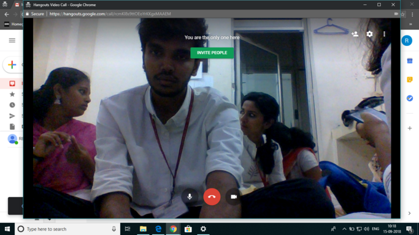

-
March 2018
-
March 10, 2018
Interviews were held to select students to form the REC-CHENNAI 2018 iGEM team.
-
March 16, 2018
Final team members were selected and the team was formed
-
March 20, 2018
First official team meeting
-
March 25, 2018
First brainstorming session
-
March was the month of firsts for our team. We bounced ideas off of one another and made ourselves familiar with who we were going to work with and how we were to get as much productive work done as possible. We spent the first few meetings talking about the roles each member was going to play and how we would monitor our progress. It’s safe to say that March was the beginning of our journey into iGEM 2018.
-
April 2018
-
March 04, 2018
Brainstorming - 2
-
March 10, 2018
Brainstorming - 3
-
March 21, 2018
Brainstorming - 4
-
March 25, 2018
Skype call with VIT iGEM team

-
April was filled with back-to-back brainstorming sessions. With many a day spent in the deserted classrooms of our college, we managed to finalize what would be our project ‘FluoroScreen’. We familiarized ourselves with our Plan of Action and dived into the depths of Site-Directed Mutagenesis.